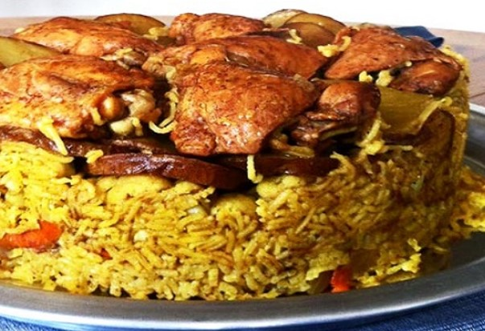

How to make maqluba
Ingredients
- 1medium eggplant (1 pound)
- Salt.
- 3½pounds bone-in chicken pieces.
- 1teaspoon ground cumin.
- 6cloves.
- 6green cardamom pods.
- 3bay leaves.
Steps
- Prepare the eggplant and the potato by washing them, slicing them, drizzling with some oil and salt, then
roasting them at 450F for 30 minutes. If you're using cauliflower, roast it the same way.
- Get started on cooking the meat and creating the stock. Sear the meat in some oil, then add water and whole
spices and pressure cook it (in my instant pot) for 10 minutes if using lamb or veal (less time if using
chicken). If you don't have a pressure cooker, simply allow the meat to boil on medium high heat for 40-60
minutes, until tender. This will depend on the type of meat you have.
- Prepare the onions and peppers by slicing them into thin wings and cooking them on the stove top with some
salt and oil for a few minutes until they soften. If you're using other vegetables like green beans and
carrots, add them in with the onions and peppers.
- After the meat has cooked, remove it and set aside. Strain the stock from the whole spices and then add the
turmeric, salt, pepper and tomato paste in. Mix well and add some water if you need to adjust the total
amount of liquid you need for the rice you're cooking. You can do this in a pot or a bowl. The colour of the
stock should be a deep orange.
- Now you can start layering all the vegetables, meat and rice together in the pot. Start with a bit of oil
drizzled on the bottom. Then add tomato slices, eggplant, potato, meat, onions and peppers, then the rice.
Finally, pour the stock on top and it should come up to just above the rice.
- Cook the maqluba on medium high heat for about 7 minutes until you start to see the water bubbling. Then
immediately cover it and reduce the heat to low. Ensure your pot is covered well - you can also use a towel
to cover it and ensure the steam doesn't escape. It will cook on low heat for 50 minutes.
- Turn off the heat and allow the maqluba to rest for a few minutes. Then, using a flat tray with slightly
raised edges, place it on top of the pot and using both hands to flip it over onto the tray. Keep the pot in
place upside down for a few minutes to allow gravity to do the work. This will help keep the maqluba in
shape. Then slowly start raising the pot to release the maqluba. You're done!
Click to see full recipe
